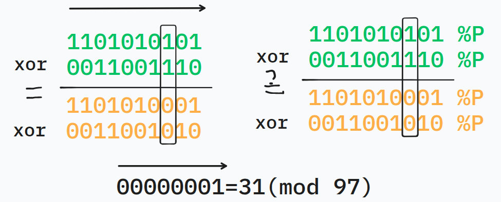

原题
阳台是左下角 ((0,0))、右上角 ((n,m)) 的方格图，有 ( 2k ) 盏灯，颜色 ( 1 \sim k )，每种颜色 2 盏。这些灯分布在方格中，同一个方格可能会有多盏灯，同一种颜色的灯能在一起。坐标均为正整数。
定义一个矩形区域是好的，当且仅当：
-
边与阳台边平行；
-
每种颜色的两盏灯要么全在区域内，要么全在区域外；
-
左上角、右下角坐标为整数；
-
长和宽都至少为 2。
求好的区域数量。
1≤n≤150,1≤m≤1000,0≤k≤2⋅105。
注意到这道题有奇特的 n<m 的性质，因此我们可以想着去搞一点神秘做法。
在经过我前面的 MO 队大蛇 esgojg 的提醒，得知这题是一个 O(n2m⋅米奇妙妙) 的做法。
具体做法是，规定矩形的上下边 (xl,xr)，然后统计合法的 左右边的对。全部加起来就是答案了。
先考虑 k 较小时的做法。
我们令每一竖列存一个 bitset。在 xr 往下扫的过程中，当碰到了一个灯笼 (xr,y)，它的颜色是 c，就将 bitset[y][c]^=1。
1
2
3
4
5
6
7
8
9
10
11
12
| struct Line_status{
ll sta[maxm];
void push(int x){
for(auto p: b[x]){
int y=p.first,col=p.second;
sta[y]^=_2[col];
}
}
void clear(){
for(int i=1;i<=m;++i) sta[i]=0;
}
}bits;
|
当我们统计此时的答案的时候，计算bitset 的前缀异或和 s。那么表示矩形 (xl,xr,a,b) 中哪些颜色有且仅出现一次就是：
i=a⨁bbitseti→sa−1⊕sb
然后这一回合的贡献即为：
i,j,i<j∑[si⊕sj=∅]→i,j,i=j∑[si=sj]
如何计算？因为有“宽至少为 2“的限制，太近的相同的 si 不能被统计
因此在从左往右扫的过程中开一个 unordered_map 来存同一 s 的出现的次数。延迟 2 次再添加进 unordered_map 即可。
1
2
3
4
5
6
7
8
9
10
11
12
13
14
15
16
17
| ll s[maxm];
unordered_map<ll,int> cnt;
ll ans;
void solve(){
s[0]=0;
for(int i=1;i<=m;++i){
s[i]=s[i-1]^bits.sta[i];
if(i-2>=0){
if(!cnt.count(s[i-2])) cnt[s[i-2]]=0;
cnt[s[i-2]]++;
}
int thiscnt=0;
if(cnt.count(s[i])) thiscnt=cnt[s[i]];
ans+=thiscnt;
}
cnt.clear();
}
|
复杂度为 O(n⋅k+n2⋅m⋅k)。第二个 k 为 k 位异或的常数。
然而我们发现 k 太大了。因此我们可能希望通过 modP 哈希 bitset 来解决掉 k。
但实际上，((a−c)modP)⊕((b−c)modP)≡(amodP)⊕(bmodP)(modP) 是不成立的。
其中 c 是 $ 2k $ 的形式，并且 a 与 b 的二进制表示中，在 c 对应的位都为 1。
啥意思？

在没有 modP 的情况下，(a−c)⊕(b−c)=a⊕b 显然成立，这样能保证 bitset 的正确性
但是在加入了 modP 之后，c 就不是 2k 的形式了。
反例就是上面的图。
因此，不能够使用 bitset
我们想到：既然是通过哈希 bitset 来判断的，能不能针对于每一个 color 的出现与否来构造哈希函数。
这里我们就可以使用 hash=⨁vi。给每一种颜色随机一个权值。
那么显然这样是符合所有条件的。
小时候就在想字符串哈希能不能不使用按位哈希，而使用这样的方法。
这里主要讲一下为什么字符串哈希使用按位哈希，而这里要使用 “加和哈希”。
因为字符串哈希单个位置的情况少。如果使用随机权值，没加几个可能就会有重复的情况。如果考虑顺序，第 i 个位置 ×i ，即便是这样也很容易冲突。
而这里“单个位置”指的是颜色，情况很多。并且其实大多数时候在一个方块里不会集齐 2e5 个颜色。因此可以使用“加和哈希”。
只需要这样改代码就好了
1
2
3
4
5
6
7
8
9
10
11
12
| struct Line_status{
ll sta[maxm];
void push(int x){
for(auto p: b[x]){
int y=p.first,col=p.second;
sta[y]^=value[col];
}
}
void clear(){
for(int i=1;i<=m;++i) sta[i]=0;
}
}bits;
|
这样子，复杂度为 O(n⋅k+n2⋅m)。
关于随机权值
如果担心 long long 的随机数还会起冲突（有病吧 ll 都这么大了），可以用这个：
1
2
3
4
5
6
7
| typedef __uint128_t ll;
random_device rd;
mt19937_64 e(rd());
inline ll Rand(){
return (((ll)e())<<64) | ((ll)e());
}
|
而在这里，我们不希望随机数过小，可以使用这个：
1
2
3
4
5
6
7
8
9
10
11
12
| typedef __uint128_t ll;
random_device rd;
mt19937_64 e(rd());
uniform_int_distribution<uint64_t> ul(0,1ll<<60);
uniform_int_distribution<uint64_t> ur(0,UINT64_MAX);
uniform_int_distribution<uint64_t> ur_0(1e9,UINT64_MAX);
inline ll Rand(){
uint64_t high=ul(e);
if(high==0) return ((ll)ur_0(e));
return (((ll)high)<<64) | ((ll)ur(e));
}
|
在这里，uniform_int_distribution<uint64_t> 可以在闭区间内随机出 uint64 数值。
可以把 uint64_t 改成其他的，例如 double。
但是这里不支持 __uint128_t。所以要自己生成。
C++ 里没有支持 __uint128_t 的哈希函数，因此就需要自己写一个：
1
2
3
4
5
6
7
| struct Uint128Hash{
size_t operator()(const ll &x)const{
uint64_t l=(uint64_t)(x>>64);
uint64_t r=(uint64_t)x;
return std::hash<uint64_t>{}(l) ^ (std::hash<uint64_t>{}(r)<<1);
}
};
|
给 unordered_map 使用：unordered_map<ll,int,Uint128Hash> cnt
这道题就做完了。
1
2
3
4
5
6
7
8
9
10
11
12
13
14
15
16
17
18
19
20
21
22
23
24
25
26
27
28
29
30
31
32
33
34
35
36
37
38
39
40
41
42
43
44
45
46
47
48
49
50
51
52
53
54
55
56
57
58
59
60
61
62
63
64
65
66
67
68
69
70
71
72
73
74
75
76
77
78
79
80
81
82
83
84
85
86
87
88
89
90
91
92
93
94
95
96
97
98
99
100
101
102
|
#include<bits/stdc++.h>
using namespace std;
typedef __uint128_t ll;
const int maxn=165,maxm=1015,maxc=2e5+35;
const ll inf=1e36;
random_device rd;
mt19937_64 e(rd());
uniform_int_distribution<uint64_t> ul(0,1ll<<60);
uniform_int_distribution<uint64_t> ur(0,UINT64_MAX);
uniform_int_distribution<uint64_t> ur_0(1e9,UINT64_MAX);
inline ll Rand(){
uint64_t high=ul(e);
if(high==0) return ((ll)ur_0(e));
return (((ll)high)<<64) | ((ll)ur(e));
}
struct Uint128Hash{
size_t operator()(const ll &x)const{
uint64_t l=(uint64_t)(x>>64);
uint64_t r=(uint64_t)x;
return std::hash<uint64_t>{}(l) ^ (std::hash<uint64_t>{}(r)<<1);
}
};
int n,m,c;
vector<int> a[maxn][maxm];
vector<pair<int,int> > b[maxn];
void input(){
n=read()+1;m=read()+1;c=read();
for(int i=1;i<=c;++i){
int x1=read()+1,y1=read()+1,x2=read()+1,y2=read()+1;
a[x1][y1].emplace_back(i);
a[x2][y2].emplace_back(i);
b[x1].push_back({y1,i});
b[x2].push_back({y2,i});
}
}
ll value[maxc];
unordered_set<ll,Uint128Hash> used;
void random_value(){
for(int i=1;i<=c;++i){
do{
value[i]=Rand();
}while(used.count(value[i]));
used.insert(value[i]);
}
}
struct Line_status{
ll sta[maxm];
void push(int x){
for(auto p: b[x]){
int y=p.first,col=p.second;
sta[y]^=value[col];
}
}
void clear(){
for(int i=1;i<=m;++i) sta[i]=0;
}
}s;
ll cpysta[maxm];
unordered_map<ll,int,Uint128Hash> cnt;
ll ans;
void solve(){
cpysta[0]=0;
for(int i=1;i<=m;++i){
cpysta[i]=cpysta[i-1]^s.sta[i];
if(i-2>=0){
if(!cnt.count(cpysta[i-2])) cnt[cpysta[i-2]]=0;
cnt[cpysta[i-2]]++;
}
int thiscnt=0;
if(cnt.count(cpysta[i])) thiscnt=cnt[cpysta[i]];
ans+=thiscnt;
}
cnt.clear();
}
int main(){
input();
random_value();
for(int xl=1;xl<n;++xl){
s.clear();
s.push(xl);
for(int xr=xl+1;xr<=n;++xr){
s.push(xr);
solve();
}
}
write(ans);
return 0;
}
|
submission